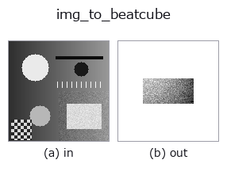

bridge op• データ種: image → beatcube
• 呼び出し: fullseye.apply(img, "img_to_beatcube", a=0.5, b=0.5) (2-D は 1 画像 + 2 スカラつまみ a,b∈[0,1] のモデル)

*図は合成の入力 128×128 で実際に走らせた出力。左が入力、右が出力。点群は上から見た散布(明るさ = z)、1-D 列は折れ線、体積は z 方向の最大値投影、動画は中央フレーム、複素画像は振幅、絵にならない返り値は値そのもの。*
つまみ a を振る(0.1 / 0.5 / 0.9、もう一方は既定):
▸ img_to_beatcube: knob a sweep (docs site)
つまみ b を振る(0.1 / 0.5 / 0.9、もう一方は既定):
▸ img_to_beatcube: knob b sweep (docs site)
別の画像でも(合成シーン / 写真 / 硬貨。上段が入力、下段がその出力。つまみは既定):
▸ img_to_beatcube: other inputs (docs site)
*4 列目はカラー (H,W,3) の入力。この op は色を跨がずに扱える(色チャネルを 3 本目の空間軸として畳み込まない)。*
画像の明点を FMCW レーダーの標的(距離 = 列、速度 = 行)として読み、複素ビート立方体 (A,C,S) にする。
平滑化(σ=2)した画像の局所極大を値の降順に `K` 個拾い、各点を標的にする:
`range_m = 2 + 30 * col / W、velocity_ms = 15 * (2 * row / H - 1)`、
振幅 = 画素値。前方モデルは台帳の `fmcw_beat_simulate(rangedoppler`)
そのもので、`n_samples = 64、n_chirps = 32、n_antennas = 4`(素子間隔は
既定の半波長、標的はすべて正面 = 到来角 0°)、その他は
同関数の既定(標本化 10 MHz、掃引 20 THz/s、チャープ周期 50 µs、波長 3.89 mm)。
この既定では 距離は 0〜37.5 m、速度は ±19.5 m/s が曖昧さの無い範囲 で、
上の写像はその内側に収まる。
• `a → 複素白色雑音の σ = 0.5 * a`(a=0 で無雑音)。
• `b → 標的数 K = 1 + int(b * 6)`(b=0.5 で 4。極大が足りなければその数)。
• 返り値: `(4, 32, 64) complex128。tb_range_doppler_map` で 2-D FFT すると
標的ごとの峰が「列 → 距離ビン、行 → ドップラービン」に立ち、
`tb_beamform_delay_sum` は 4 素子で到来角 0° の峰を返す。
• 乱数 seed は 0 固定(決定的)。速度の符号は `fmcw_beat_simulate` の規約
(正 = 遠ざかる)。
• サンプルデータ カタログ(DL URL / ライセンス) — 2-D は skimage.data(BSD/public)+ 合成、3-D は実データ源(Stanford/PDS 等)の DL URL。
• 演算子の来歴・参考文献 — この op 族の元になった研究/手法の出典。
• アルゴリズムの正典(著者・年)と用途は上記ファミリ使い方ガイドに記載。
下のプログラムは実際に走ることを確かめてある(図と同じ入力)。Studio のヘルプではこのブロックがボタンになり、その場で読み込んで実行できる。
img_to_beatcube 0.50 0.50
▸ Load this pipeline · Load & run
• gallery2d_bridge — py -3.11 examples/gallery2d_bridge.py
beatcube を入力に取れる)identity · tb_fmcw_window_apply · tb_range_doppler_map · tb_fmcw_range_profile · tb_beamform_delay_sum
bridge)img_to_points · img_to_keypoints · img_to_signal · img_to_counts · img_to_matrix · img_to_video · img_to_volume · img_to_lightfield
*Provenance: ops.py — 2D operator registry. この per-op ノートは tools/opdocs.py md が自動生成(手編集しない)。*
© 2026 Kazufumi Furuse — Fullseye operator documentation. Licensed under Apache-2.0.
{kind=link}
{kind=link}
{kind=link}